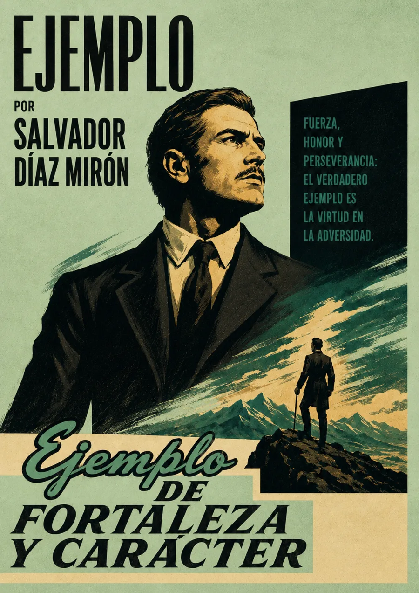
Ejemplo
4.0/5
Resumen
Poema de Salvador Díaz Mirón, publicado en 1901, en el que un gavilán es abatido por robar palomas y su caída se convierte en parábola sobre la fuerza, la vanidad y el precio de la trasgresión. Con su lenguaje escultórico y su moral estoica, la pieza resume el modernismo parnasiano de un poeta que veía en el rigor formal una forma de virtud.
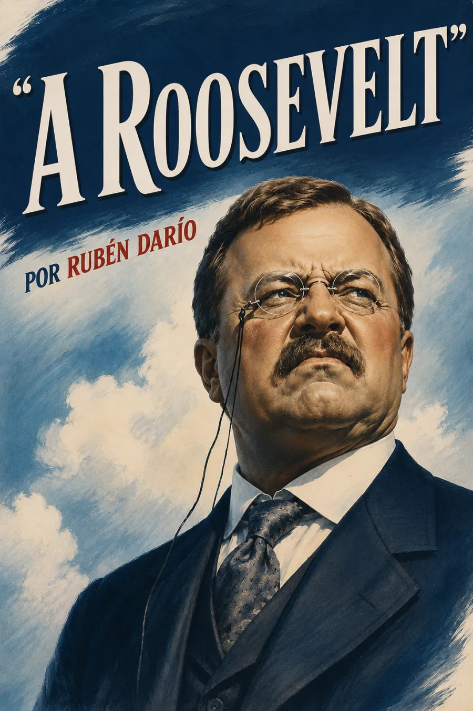
A Roosevelt
4.7/5
Resumen
Rubén Darío se dirige en 1904 directamente al presidente estadounidense Theodore Roosevelt para advertirle que, pese al poderío militar y económico de su país, América Latina conserva un alma, una lengua y una civilización que ningún imperio puede reducir. Escrito en respuesta al intervencionismo de Estados Unidos en Panamá y el Caribe, se convirtió en el poema fundacional de la denuncia antiimperialista en la poesía latinoamericana.
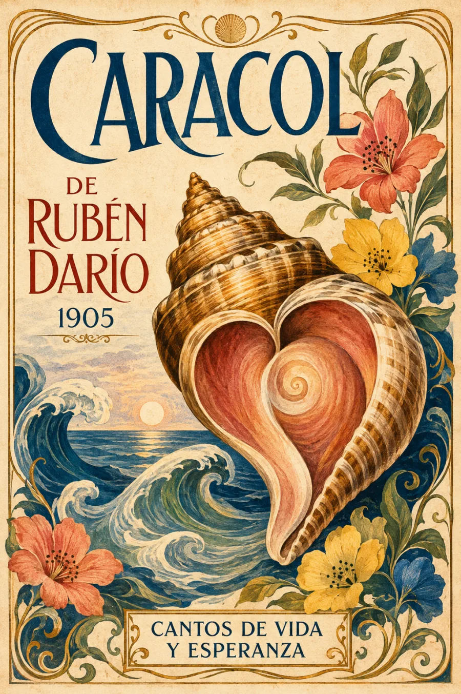
Caracol
4.2/5
Resumen
Breve poema de Rubén Darío, incluido en Cantos de vida y esperanza (1905), en el que una caracola marina llevada al oído revela el rumor eterno del océano y, con él, un eco de las profundidades del propio ser. Ejemplo de la capacidad de Darío para condensar en una imagen sencilla toda una meditación simbolista sobre el origen y el misterio de la vida.
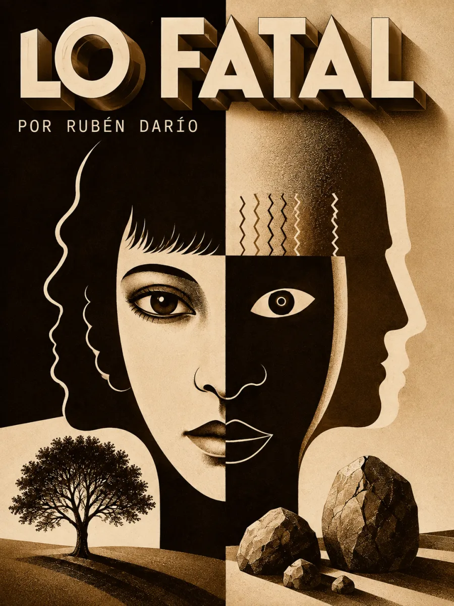
Lo fatal
4.6/5
Resumen
Uno de los poemas más citados de Rubén Darío, cierre de Cantos de vida y esperanza (1905), en el que la voz poética envidia al árbol y a la piedra por no tener la conciencia dolorosa de existir, de saber que se vive y se ha de morir sin certeza de nada más allá. Cima del pesimismo existencial del modernismo hispanoamericano, condensado en apenas catorce versos.
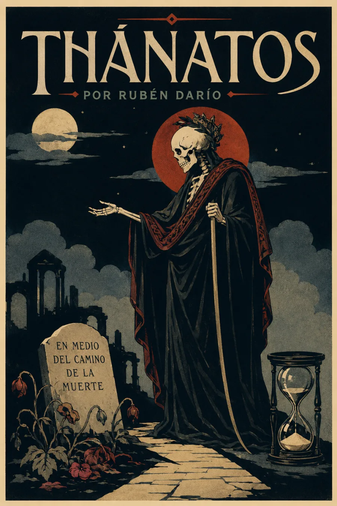
Thanatos
3.8/5
Resumen
Poema breve de Rubén Darío, también de Cantos de vida y esperanza (1905), en el que la muerte personificada camina junto a la voz poética como compañera constante e inevitable de toda existencia. Con su tono grave y su imaginería fúnebre, es una de las piezas donde el pesimismo finisecular de Darío se expresa con mayor economía y contundencia.
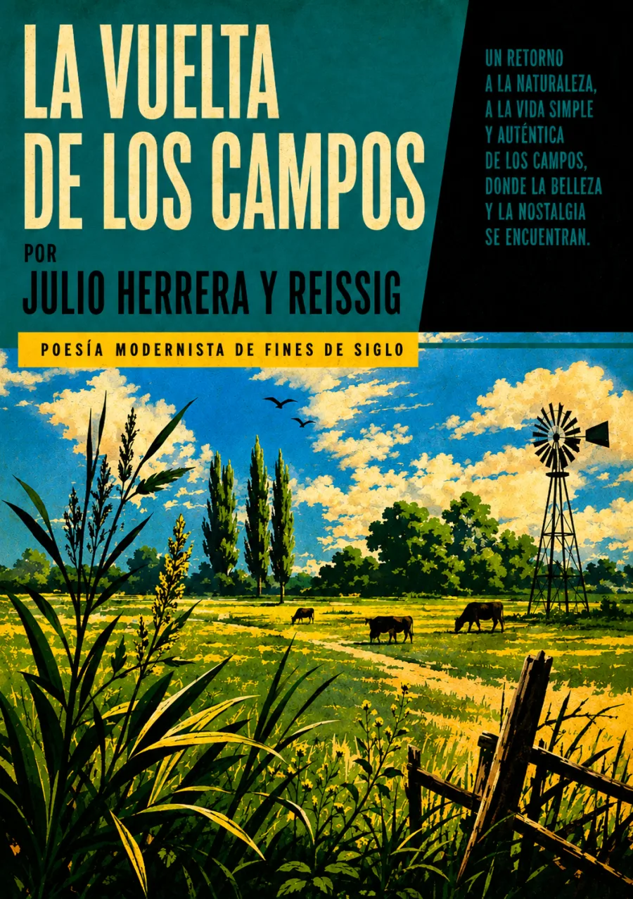
La vuelta de los campos
4.1/5
Resumen
El uruguayo Julio Herrera y Reissig, figura central del modernismo rioplatense, celebra en este poema de mediados de la década de 1900 el regreso a la vida sencilla y auténtica del campo, lejos del artificio urbano. Su lenguaje sensorial y su musicalidad exuberante son característicos de la etapa de madurez del poeta, escrita en gran parte desde la reclusión de su propia enfermedad.
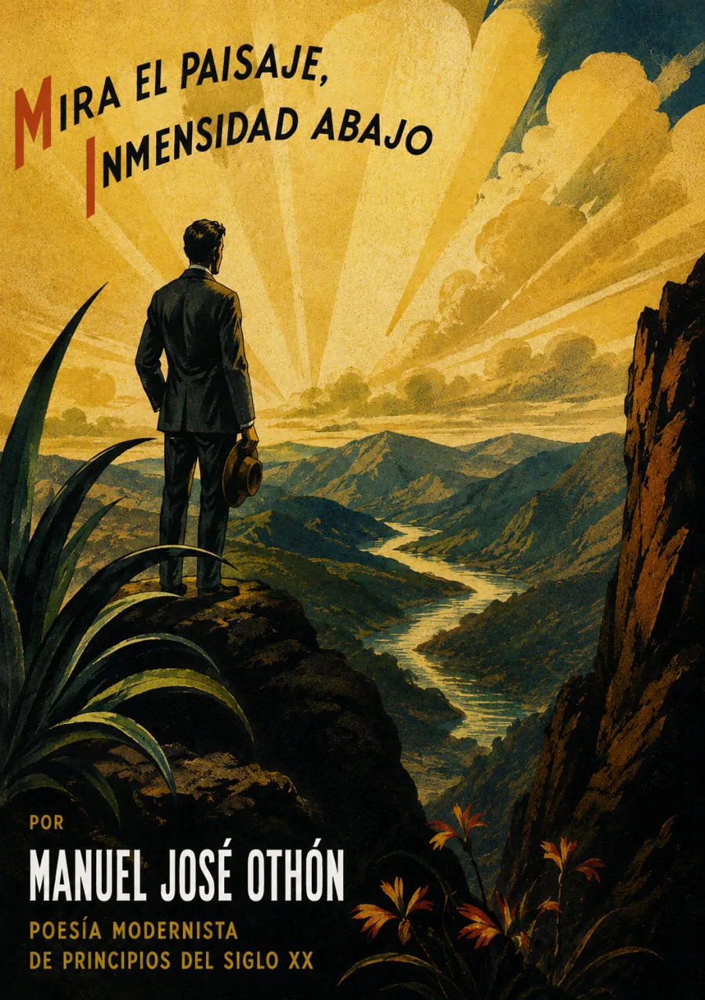
Mira el paisaje, inmensidad abajo
4.3/5
Resumen
Verso de Manuel José Othón perteneciente a Idilio salvaje (1906), poema narrativo en el que la inmensidad del paisaje del norte mexicano —la barranca, la sierra, el silencio— se convierte en espejo de una pasión amorosa devastadora y sin consuelo. Considerado la cumbre de la poesía paisajista mexicana previa a la vanguardia, funde naturaleza y desengaño en un solo aliento.
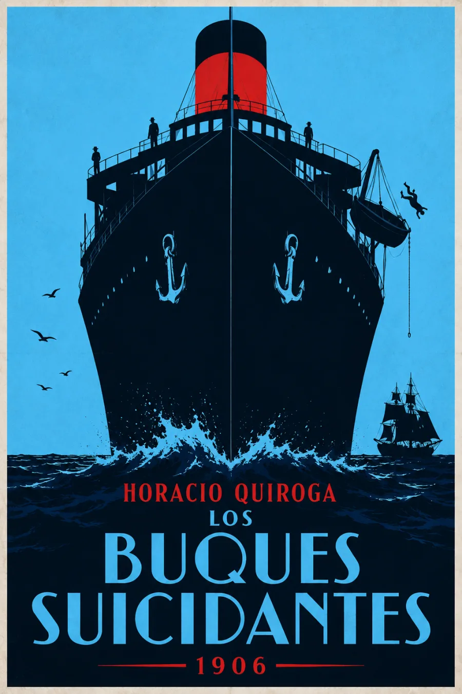
Los buques suicidantes
4.2/5
Resumen
Horacio Quiroga narra en 1906 la leyenda de los barcos que, sin motivo aparente, son abandonados en alta mar por tripulaciones enteras que se arrojan al agua sin explicación, dejando el buque a la deriva como un fantasma flotante. Uno de sus primeros relatos de horror marítimo, construido con el rigor casi científico que Quiroga aplicaría después a sus cuentos de la selva.
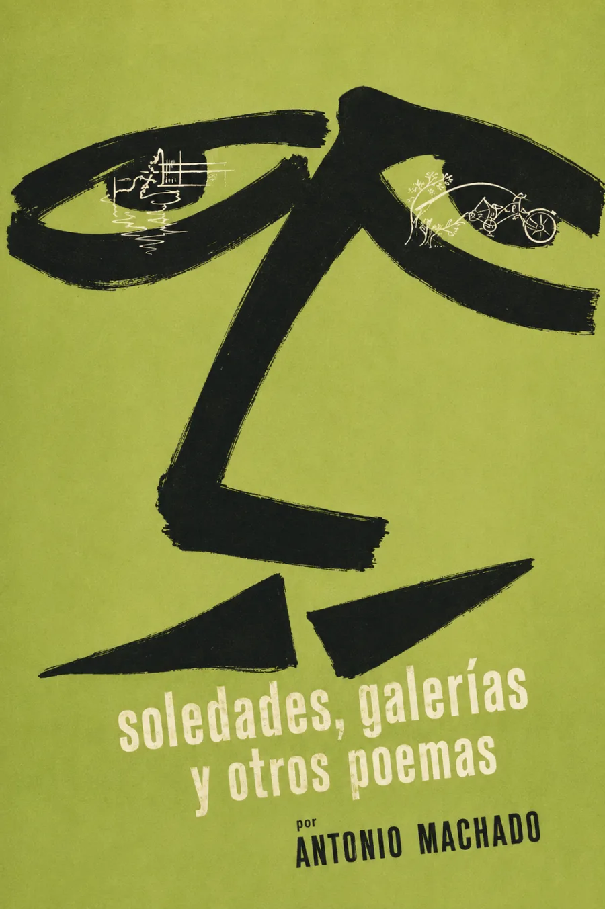
Soledades, galerías y otros poemas
4.5/5
Resumen
Antonio Machado reunió en esta edición de 1907 los poemas de introspección simbolista con los que se dio a conocer, ampliando su primer libro de 1903. Fuentes, tardes, caminos y relojes se convierten en el vocabulario íntimo de un yo poético que dialoga con su propia memoria y su soledad, en las antesalas del Machado más maduro de Campos de Castilla. Un puente entre el modernismo becqueriano y la poesía del 98 que definiría a toda una generación.
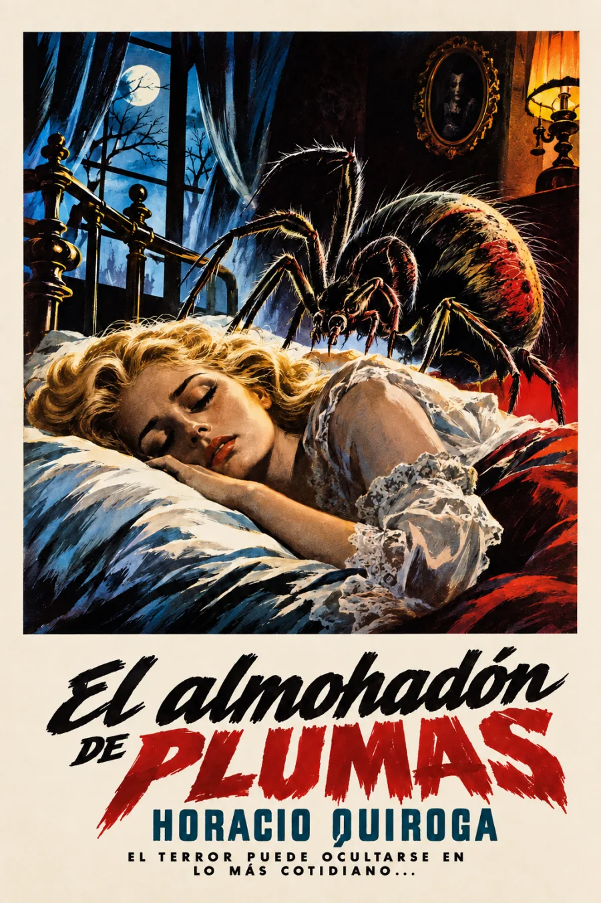
El almohadón de plumas
4.7/5
Resumen
Horacio Quiroga narra en 1907 la breve y fría luna de miel de Alicia y Jordán, un matrimonio recién casado en cuya casa silenciosa la joven esposa enferma sin causa aparente hasta consumirse por completo. El terror, como es habitual en Quiroga, se esconde en lo doméstico: el propio almohadón donde ella duerme guarda un secreto que solo se revela en la última línea del cuento.
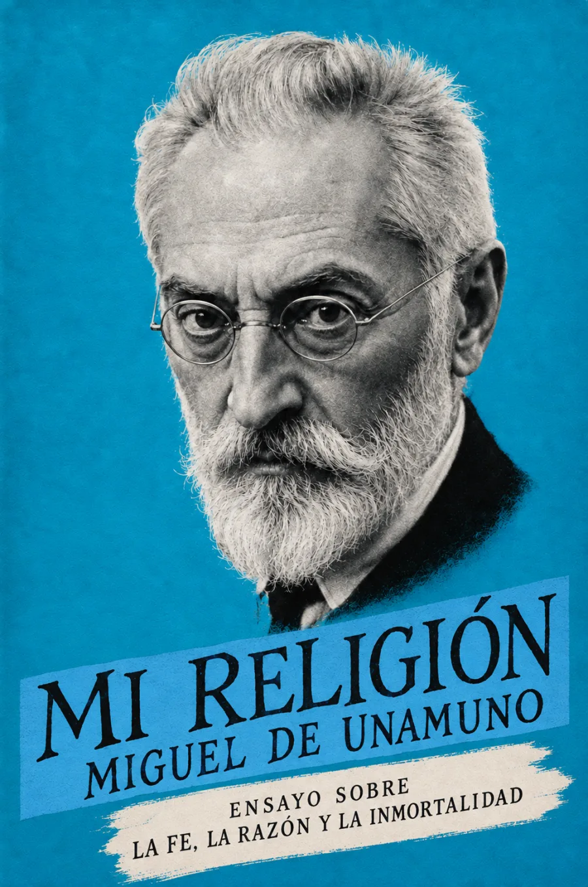
Mi religión
4.2/5
Resumen
Ensayo en el que Miguel de Unamuno, publicado en 1907, rechaza cualquier credo cerrado o sistema filosófico definitivo y declara que su única religión verdadera es la lucha incesante e incierta por creer en la inmortalidad del alma. Con su estilo combativo y paradójico, Unamuno convierte la duda misma en acto de fe, anticipando el existencialismo religioso que definiría el resto de su obra.
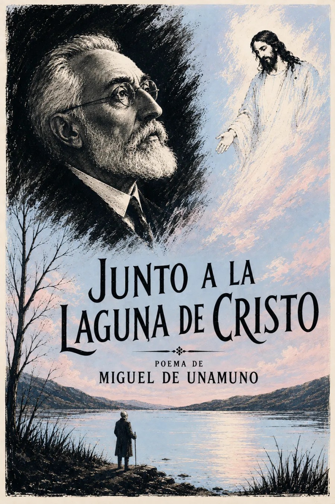
Junto a la laguna de Cristo
4.0/5
Resumen
Poema de Miguel de Unamuno inspirado en la laguna de Sanabria, a la que la leyenda local atribuye el nombre de "laguna de Cristo" por castigar con el diluvio a un pueblo que negó posada al peregrino divino. Ante sus aguas, el poeta medita sobre la fe, el silencio de Dios y la promesa incumplida de la vida eterna, en uno de los textos más representativos de su angustia religiosa de principios de siglo.
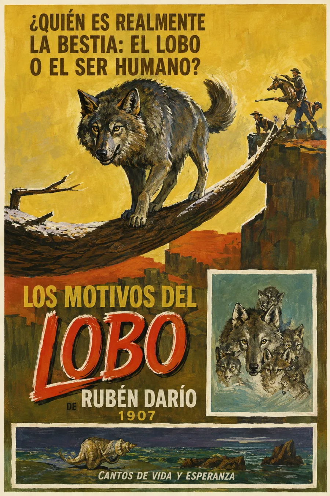
Los motivos del lobo
4.4/5
Resumen
Rubén Darío versiona en 1907 la leyenda medieval de San Francisco de Asís y el lobo de Gubbio: el santo doma a la bestia con mansedumbre y la convierte en protectora del pueblo, pero al regresar años después la encuentra otra vez feroz, porque los hombres —le explica el lobo— nunca dejaron de serlo con ella. Bajo el ropaje de fábula franciscana, Darío entrega una de sus condenas más directas a la hipocresía y la violencia humana.
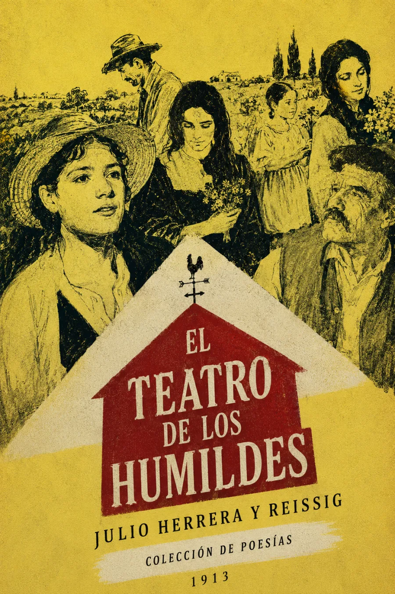
El teatro de los humildes
3.6/5
Resumen
Colección de poesías de Julio Herrera y Reissig publicada póstumamente en 1913, tres años después de su muerte, centrada en escenas y personajes rurales y populares —campesinos, aldeanas, oficios humildes— tratados con la mirada sensorial y ornamental propia del modernismo del poeta uruguayo. Contrasta con sus poemas más herméticos y decadentistas al acercarse a un costumbrismo lírico de tono más accesible.
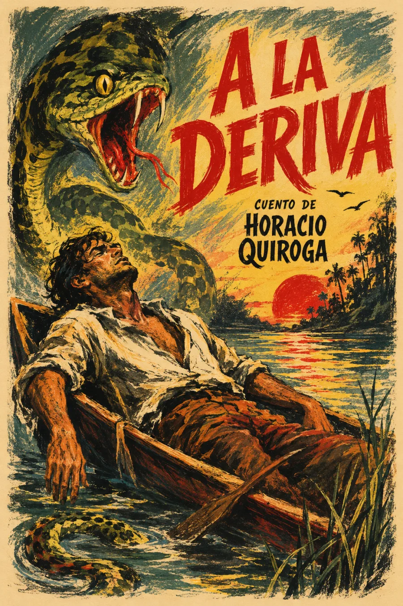
A la deriva
4.6/5
Resumen
Horacio Quiroga narra en 1912 los últimos momentos de un hombre mordido por una serpiente yararacusú en la selva misionera, mientras rema a la deriva por el río Paraná intentando llegar a tiempo a un poblado para salvarse. Con su prosa seca y precisa, sin sentimentalismo, Quiroga documenta el avance físico del veneno hasta un final abrupto que resume su visión de una naturaleza indiferente a la vida humana.
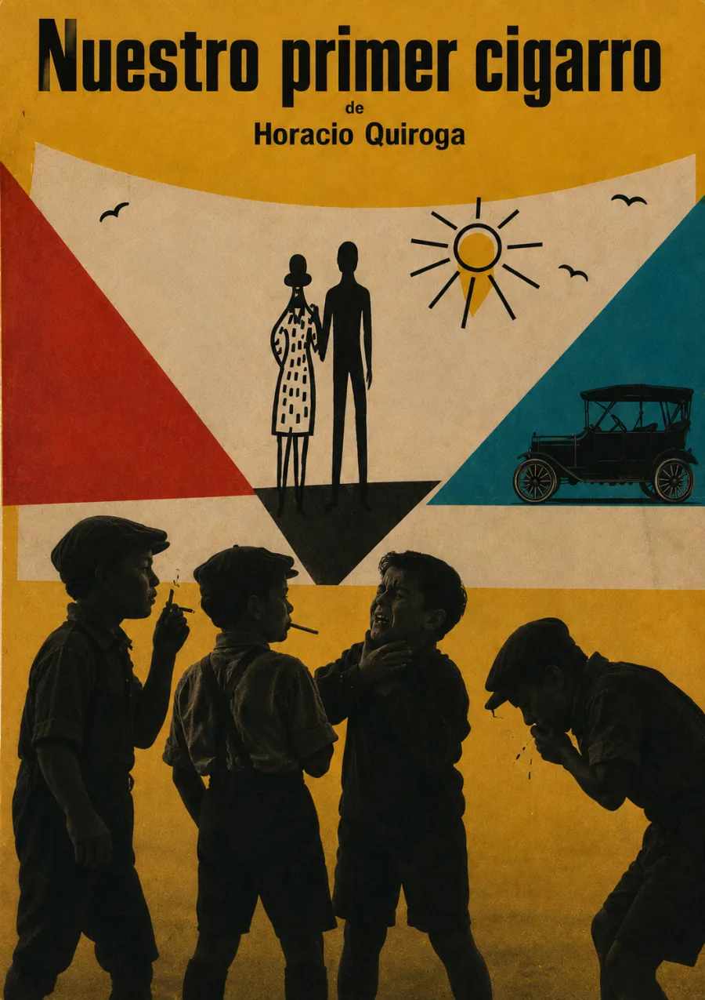
Nuestro primer cigarro
4.1/5
Resumen
Horacio Quiroga recuerda en este relato de 1913 la iniciación adolescente al tabaco entre un grupo de amigos, un rito de paso torpe y desafiante hacia la virilidad que termina, como era de esperar, en mareo y vergüenza compartida. Con su humor cálido y autobiográfico, ofrece un raro respiro costumbrista dentro de la obra generalmente sombría del autor de "La gallina degollada".
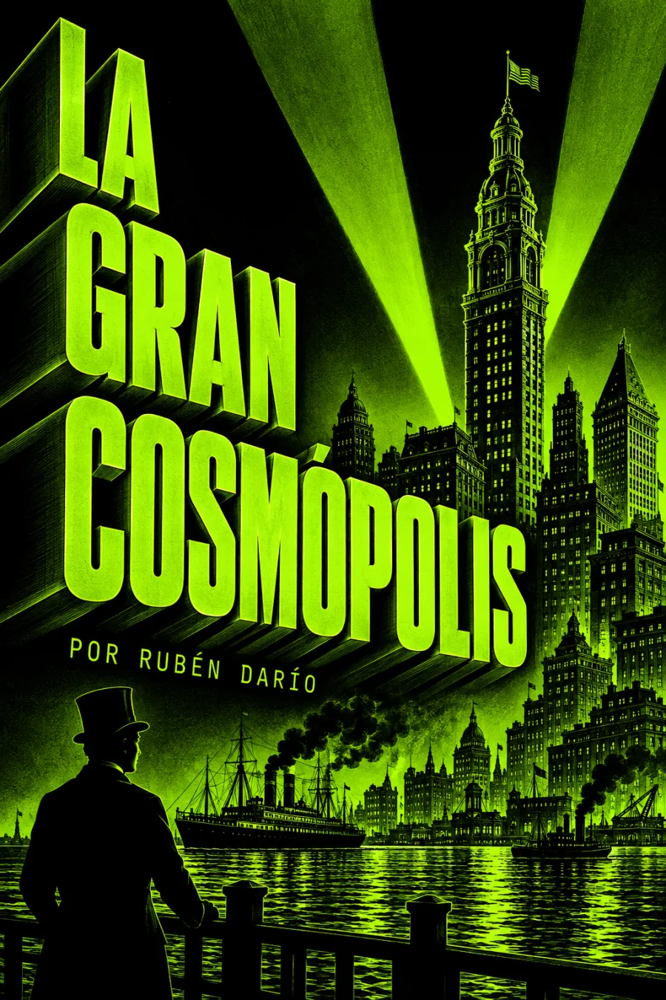
La gran cosmópolis
3.7/5
Resumen
Rubén Darío describe en este texto de 1913 su deslumbramiento y desconcierto ante Nueva York, la "gran cosmópolis" moderna de rascacielos, muchedumbres y ritmo vertiginoso que tanto atraía como inquietaba a los intelectuales latinoamericanos de su tiempo. Escrito durante uno de sus viajes por Estados Unidos, es un testimonio temprano del asombro modernista frente a la ciudad industrial del nuevo siglo.
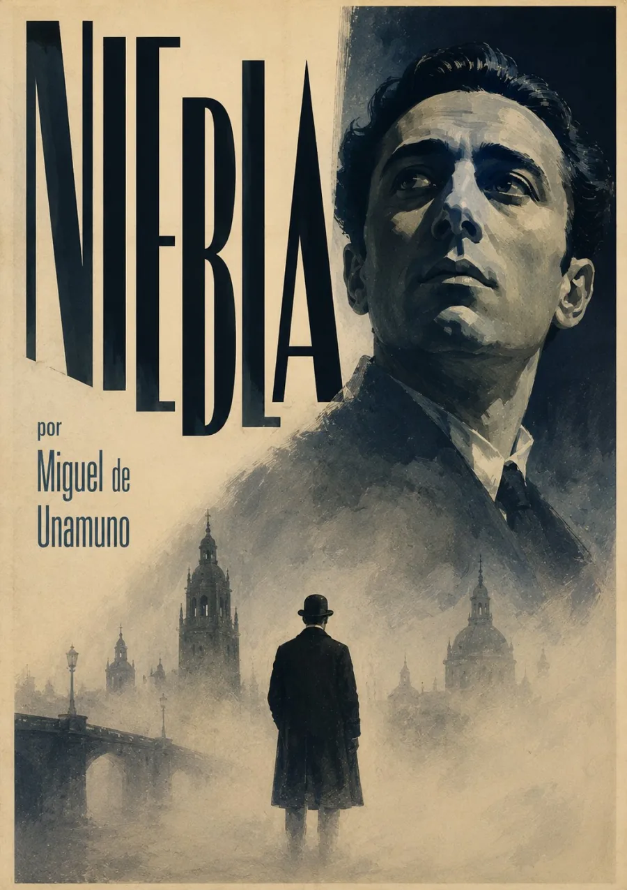
Niebla
5.0/5
Resumen
Miguel de Unamuno bautizó esta obra de 1914 como "nivola" para liberarla de las reglas de la novela tradicional: Augusto Pérez, un hombre atrapado en una crisis amorosa y existencial, termina viajando a Salamanca para confrontar cara a cara al propio Unamuno, su autor, y exigirle explicaciones sobre el libre albedrío que se le niega como personaje. Un ejercicio temprano y radical de metaficción que convierte la pregunta por la libertad humana en literatura pura.
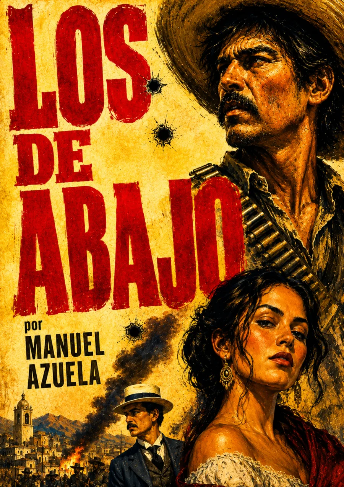
Los de abajo
5.0/5
Resumen
Mariano Azuela escribió esta novela de 1915 casi al mismo tiempo que vivía la Revolución mexicana como médico de tropa, y se nota: sigue a Demetrio Macías, un campesino arrastrado a la lucha armada, a través del caos, el idealismo desgastado y la violencia cíclica de un movimiento que devora a los suyos. Considerada la primera gran novela de la Revolución, retrata sin heroísmo ni sentimentalismo lo que significa luchar por una causa que ya no se entiende del todo.
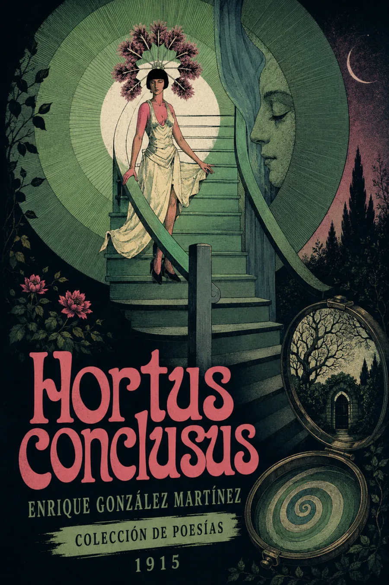
Hortus conclusus
4.0/5
Resumen
Poemario de Enrique González Martínez publicado en 1915, cuyo título en latín —"jardín cerrado", imagen mariana medieval— anuncia una poesía de introspección serena y simbolismo depurado, alejada del exceso ornamental del modernismo que el propio González Martínez ayudó a superar. Antecede a su poema-manifiesto más célebre, "Tuércele el cuello al cisne", que marcaría la transición hacia una lírica hispanoamericana más contenida.
La última fada
3.7/5
Resumen
Cuento de Emilia Pardo Bazán publicado en 1916, que retoma el imaginario del hada de la tradición gallega —el "fada"— como figura en extinción frente al avance de la modernidad y la razón. Con su habitual mirada entre lo fantástico y lo social, Pardo Bazán convierte a la última hada en una elegía por un mundo de creencias populares que el siglo XX empezaba a borrar.
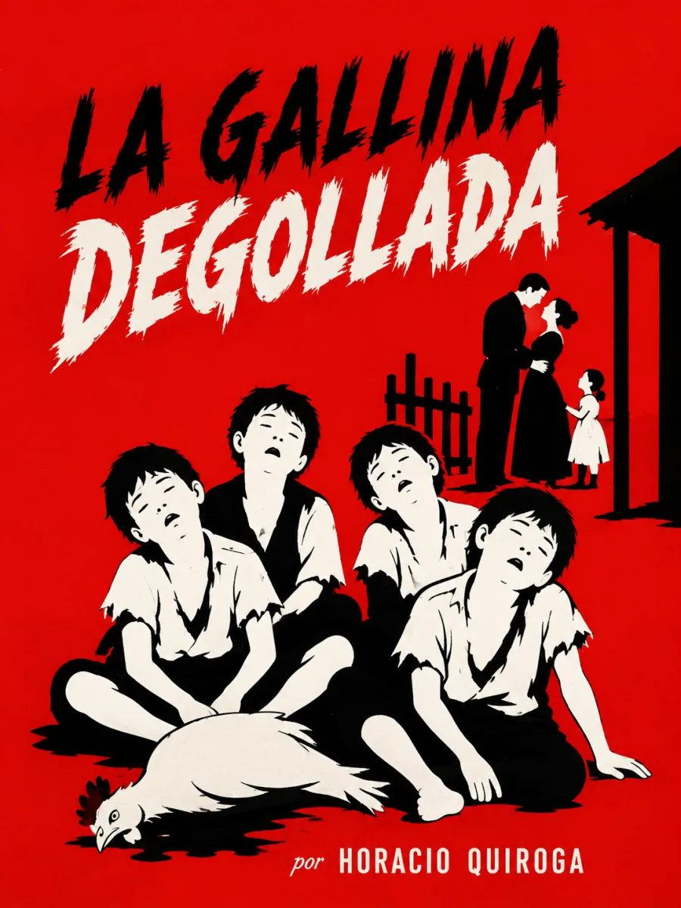
La gallina degollada
5.0/5
Resumen
El cuento de 1917 con el que Horacio Quiroga selló su lugar como el gran maestro del horror latinoamericano: un matrimonio ve nacer a sus cuatro primeros hijos con una discapacidad severa, uno tras otro, y deposita toda su esperanza en Bertita, la hija menor que nace sana. Cuando los hermanos mayores presencian a la sirvienta degollar una gallina para la cena, algo se despierta en ellos que la familia jamás vio venir. Un relato breve, brutal y perfectamente calculado sobre la culpa, la negligencia y el instinto que acecha bajo la superficie de lo doméstico.
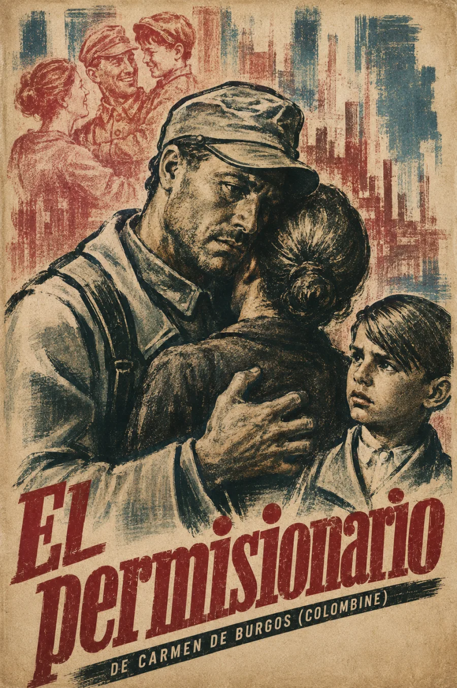
El permisionario
4.0/5
Resumen
Carmen de Burgos narra en 1917 el breve regreso a casa de un soldado con permiso durante la Primera Guerra Mundial, y la felicidad frágil de su familia sabiendo que el reencuentro tiene fecha de caducidad. Escrito bajo su seudónimo "Colombine", el relato retrata con crudeza el costo emocional de la guerra en el frente doméstico, lejos de las trincheras pero igual de marcado por ellas.
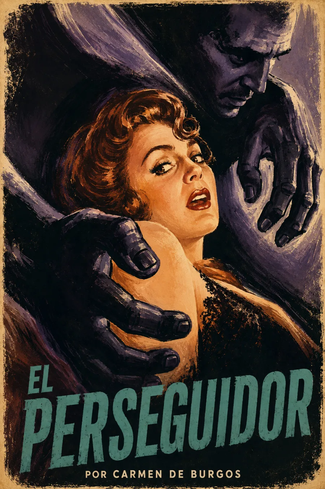
El perseguidor
3.8/5
Resumen
Relato de suspense psicológico de Carmen de Burgos, publicado en 1917, en el que una mujer se siente acechada por una presencia amenazante que difumina la línea entre la persecución real y el terror imaginado. Pionera del relato de intriga en la narrativa española de su tiempo, Burgos explora aquí la vulnerabilidad femenina frente al peligro con un pulso cercano al género de horror.
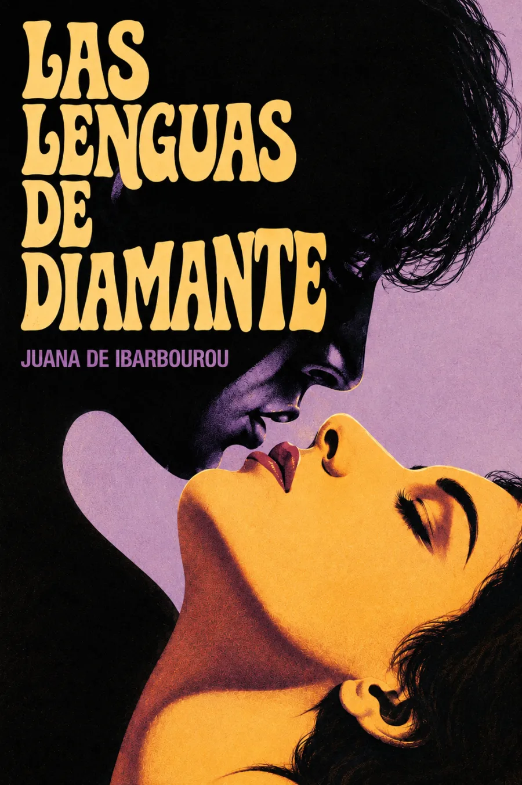
Las lenguas de diamante
4.3/5
Resumen
El poemario de 1919 que consagró a la uruguaya Juana de Ibarbourou como "Juana de América": una celebración sin pudor del cuerpo, el deseo y la naturaleza desde una voz femenina que se niega a pedir permiso. Su sensualidad directa y su musicalidad la convirtieron en una de las figuras centrales del modernismo tardío latinoamericano, e influyeron a generaciones de poetas que vinieron después.
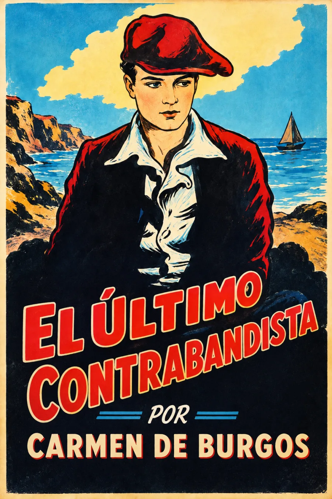
El último contrabandista
4.0/5
Resumen
Novela corta de Carmen de Burgos, escrita entre 1918 y 1920, ambientada en un pueblo costero donde el contrabando ya agonizante frente a la modernización de las aduanas se convierte en el último reducto de libertad de un hombre que se niega a rendirse al cambio de época. Burgos retrata con simpatía la figura del forajido romántico condenado por la propia modernidad que la autora, en otras obras, celebraba.
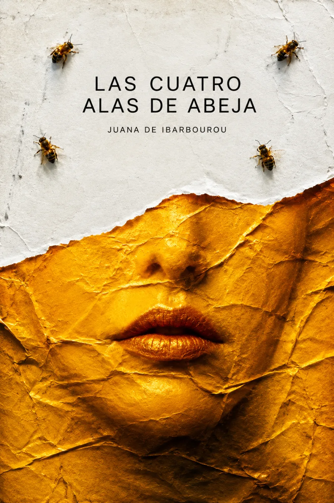
Las cuatro alas de abeja
4.3/5
Resumen
Poema de Juana de Ibarbourou perteneciente a Las lenguas de diamante (1919), en el que la voz poética se compara con una abeja de cuatro alas —imagen de una sensualidad múltiple e inagotable— que liba sin culpa ni medida. Ejemplo del erotismo directo y la celebración del cuerpo que consagraron a Ibarbourou como "Juana de América".
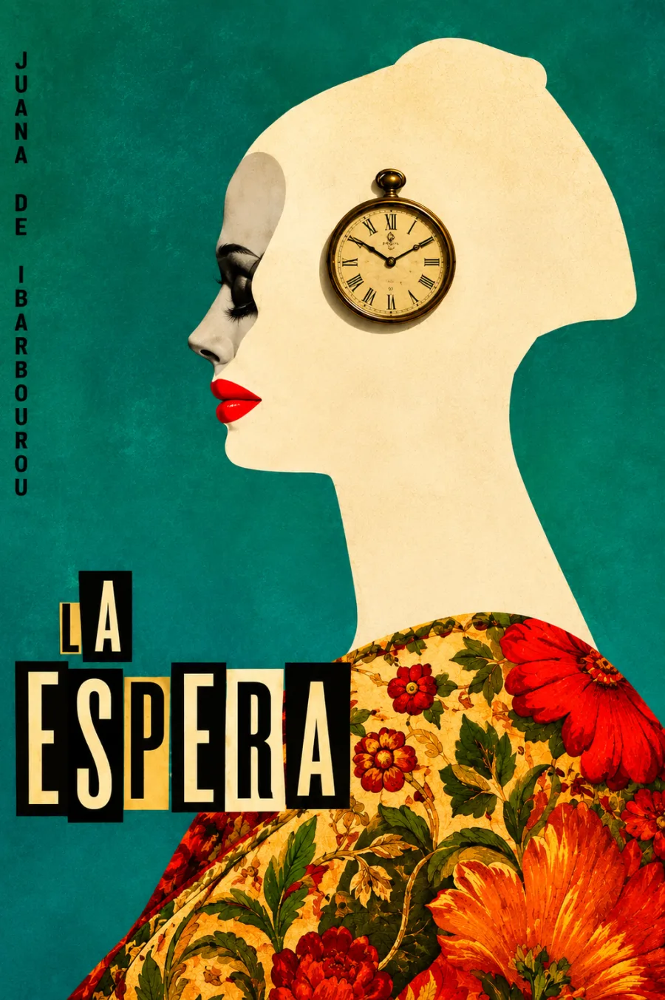
La espera
4.1/5
Resumen
Otro poema de Las lenguas de diamante (1919), en el que Juana de Ibarbourou convierte la espera del amado en un tiempo suspendido, cargado tanto de deseo como de la angustia de la impaciencia. Su musicalidad directa y su franqueza emocional son marca de la voz que revolucionó la poesía femenina hispanoamericana de su generación.
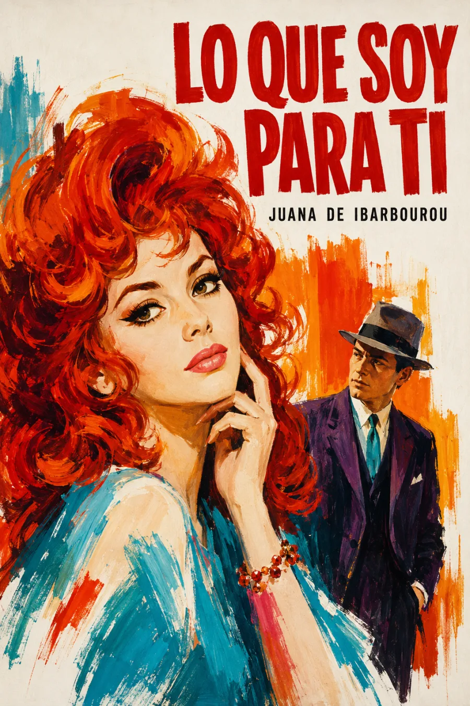
Lo que soy para ti
4.2/5
Resumen
Poema de Juana de Ibarbourou, también de 1919, en el que la voz poética enumera sin pudor lo que es y lo que ofrece al amado —cuerpo, entrega, naturaleza propia— en un tono de afirmación sensual poco común en la poesía femenina de su época. Parte del mismo impulso liberador que hizo de Las lenguas de diamante un libro fundacional.
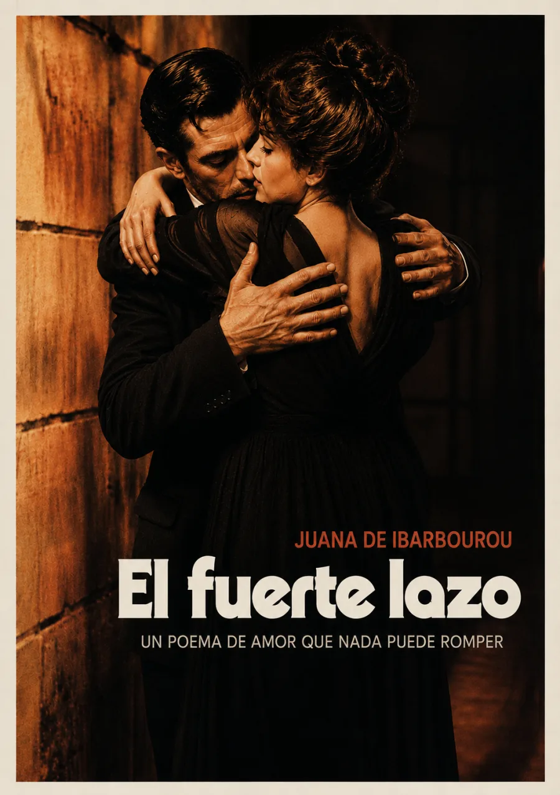
El fuerte lazo
4.0/5
Resumen
Poema de amor de Juana de Ibarbourou, publicado en 1919, que celebra un vínculo amoroso tan intenso que ni la distancia ni el tiempo logran deshacer. Con la sensualidad y la seguridad emocional características de su primera etapa poética, Ibarbourou describe el amor no como fragilidad sino como fuerza que ata y sostiene.
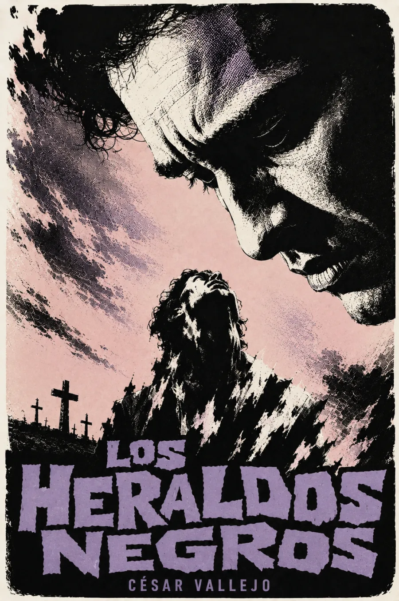
Los heraldos negros
4.7/5
Resumen
Poema que da título al primer libro de César Vallejo, publicado en 1919, y que abre con uno de los versos más citados de la poesía en español: "Hay golpes en la vida, tan fuertes... ¡Yo no sé!". Ante el dolor inexplicable y aparentemente arbitrario de la existencia, Vallejo funde el modernismo tardío con una angustia existencial radicalmente nueva que marcaría el rumbo de la poesía hispanoamericana del siglo XX.
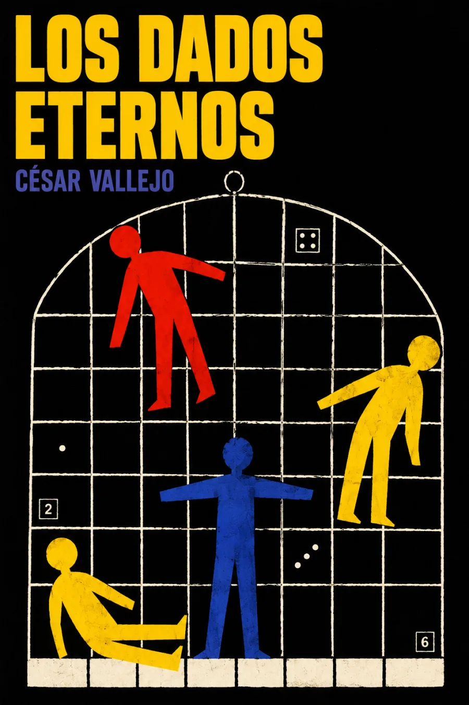
Los dados eternos
4.4/5
Resumen
También de Los heraldos negros (1919), este poema de César Vallejo increpa a un Dios jugador de dados con la existencia humana, acusándolo de arriesgar el destino de los hombres sin arriesgar nada propio. Con su blasfemia desesperada y su compasión simultánea por ese Dios imperfecto, es uno de los textos más audaces de la poesía religiosa en español.
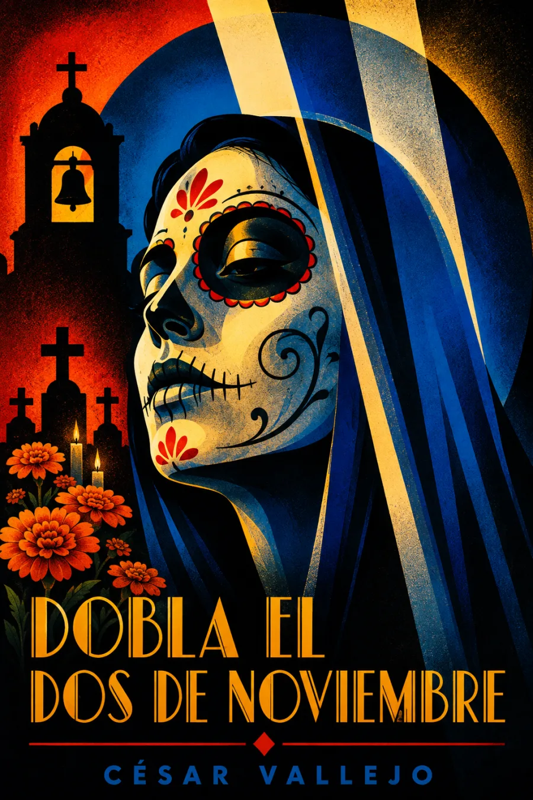
Dobla el dos de noviembre
4.2/5
Resumen
Poema de César Vallejo, incluido en Los heraldos negros (1919), que toma el Día de los Muertos como punto de partida para una meditación sobre la mortalidad, el luto y la fragilidad de toda existencia. Las campanas que doblan por los difuntos se convierten en metáfora del propio corazón de Vallejo, ya marcado por una melancolía que atravesaría toda su obra.
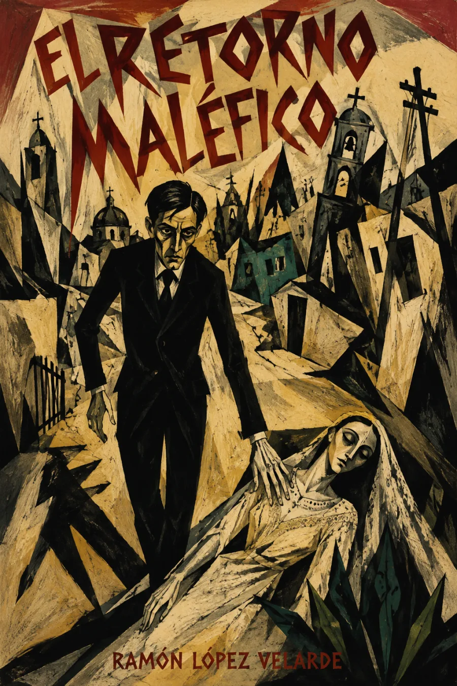
El retorno maléfico
4.3/5
Resumen
Ramón López Velarde regresa en este poema de 1919 a su pueblo natal, Jerez de Zacatecas, y lo encuentra transformado por la violencia y el desgaste de la Revolución mexicana: casas destruidas, familiares muertos, un lugar que ya no puede ofrecer el refugio de la memoria. El poema funde el lirismo provinciano característico de López Velarde con la sombra histórica de la guerra civil que atravesó México en esos años.
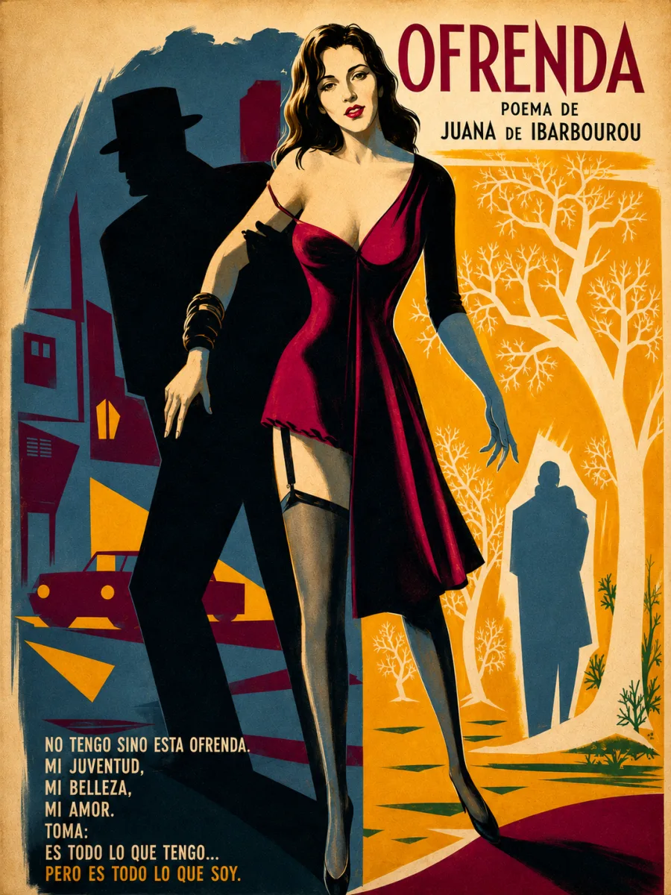
Ofrenda
4.3/5
Resumen
Juana de Ibarbourou entrega en este poema de 1919 su juventud, su belleza y su amor como una ofrenda total y sin reservas al ser amado, con la misma franqueza sensual que definió Las lenguas de diamante. "Toma: es todo lo que tengo... pero es todo lo que soy" resume la entrega absoluta que caracteriza la voz erótica de la "Juana de América".
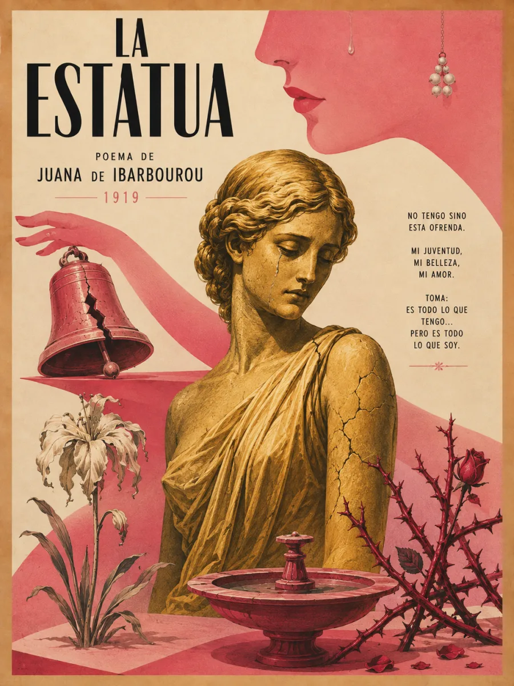
La estatua
3.9/5
Resumen
Juana de Ibarbourou imagina en este poema de 1919 una estatua de mujer que llora en silencio, prisionera de su propia belleza inmóvil, incapaz de amar o ser amada más allá de la contemplación ajena. Una reflexión sobre la vida negada por la perfección de la forma, tema recurrente en su poesía de esos años.
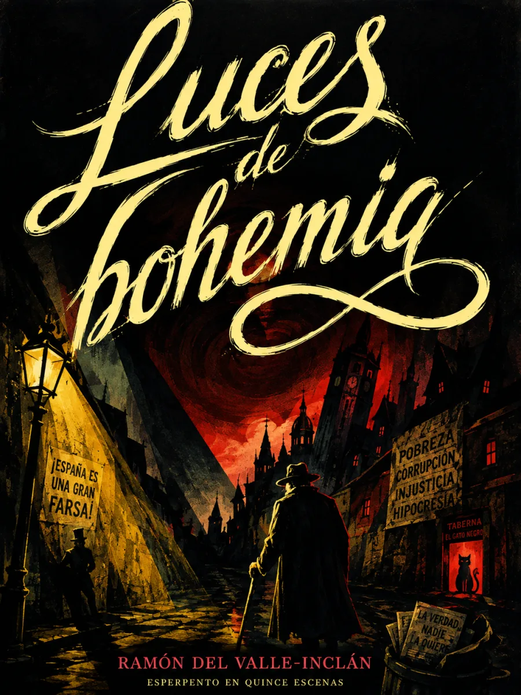
Luces de bohemia
4.8/5
Resumen
Ramón del Valle-Inclán sigue en 1920 la última noche de Max Estrella, un poeta ciego y arruinado, por un Madrid nocturno de tabernas, cárceles y miseria, hasta su muerte en la calle. Con esta obra, Valle-Inclán inaugura el esperpento, un lenguaje teatral que deforma la realidad como espejos cóncavos para revelar la verdadera fealdad moral de una España que él mismo llama "una deformación grotesca de la civilización europea".
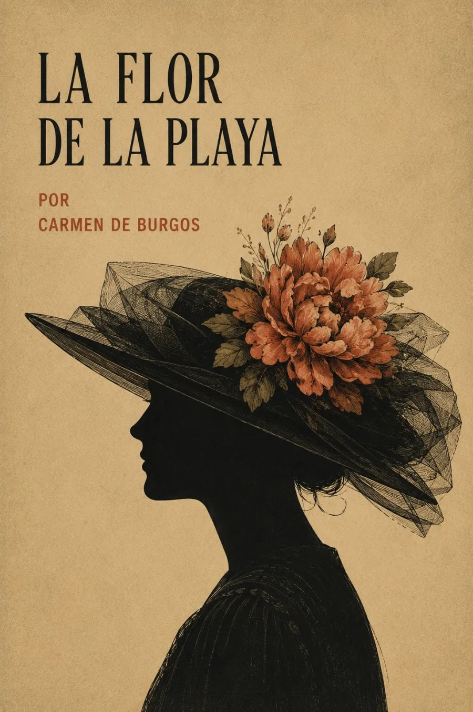
La flor de la playa
4.2/5
Resumen
Carmen de Burgos, pionera del periodismo y del feminismo español firmando como "Colombine", ambienta esta novela corta en un pueblo costero donde el romance de temporada se cruza con las restricciones reales que enfrentaban las mujeres de la época. Bajo la superficie ligera de un relato de balneario, Burgos desliza su crítica constante a un mundo que le exigía a la mujer elegir entre el deseo y la respetabilidad.
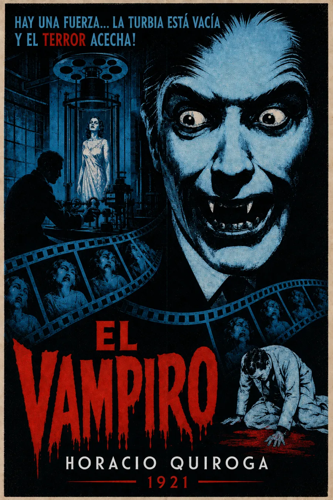
El vampiro
3.9/5
Resumen
Horacio Quiroga sitúa este cuento de 1921 en el mundo del cine, donde un director obsesionado con capturar el miedo real en la pantalla somete a su actriz a un terror que termina por desdibujar la línea entre la ficción filmada y el peligro verdadero. Con su fascinación por la tecnología del celuloide, Quiroga anticipa inquietudes sobre la imagen y la manipulación que el cine de terror explotaría décadas después.
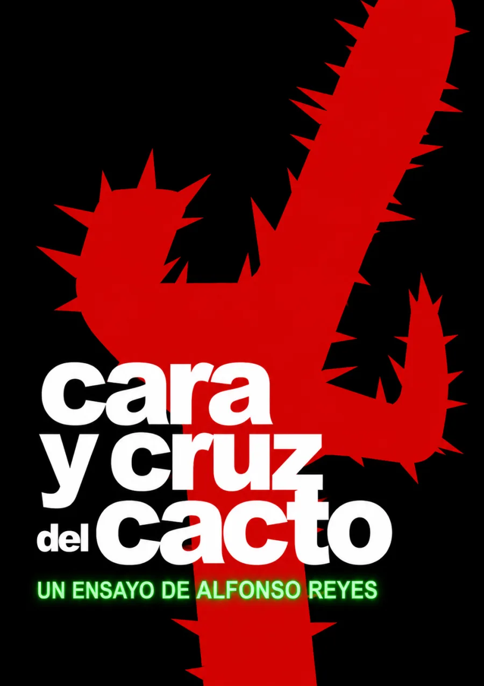
Cara y cruz del cacto
3.5/5
Resumen
Ensayo de Alfonso Reyes, escrito en la década de 1920, que toma al cacto —planta hostil por fuera, generosa por dentro— como metáfora de una identidad mexicana y americana que oscila entre la aspereza defensiva y la hospitalidad esencial. Representativo de la prosa ensayística de Reyes, que hace de la reflexión sobre símbolos cotidianos un vehículo para pensar la cultura continental.
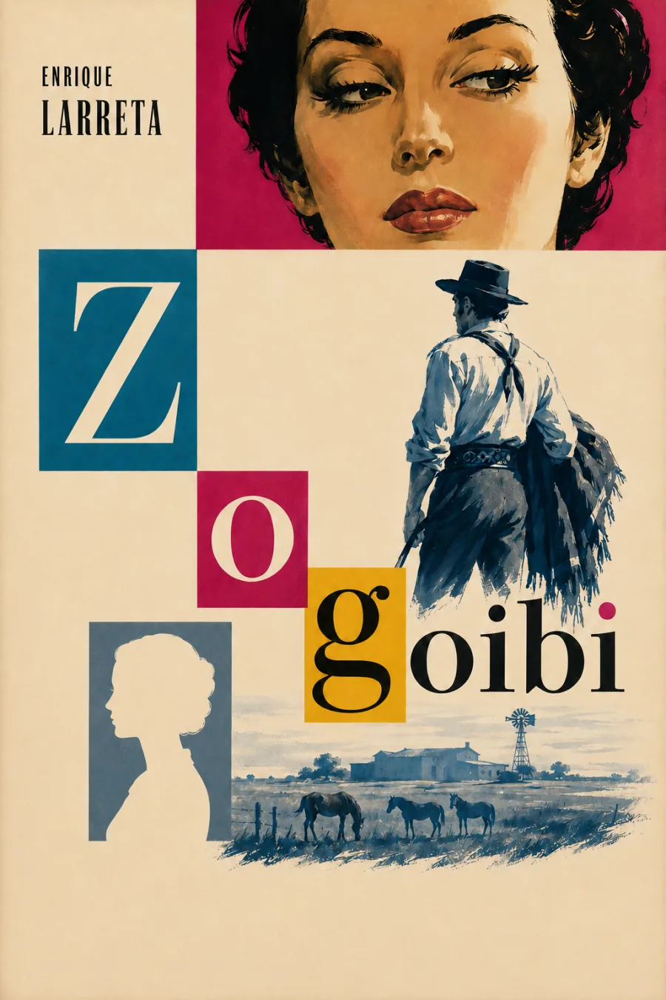
Zogoibi
4.0/5
Resumen
Enrique Larreta narra en esta novela de 1926 la crisis de Andrés Zogoibi, un estanciero argentino de origen árabe que regresa de Europa a la pampa y no logra encajar en ninguno de los dos mundos, atrapado entre el refinamiento intelectual heredado y la vida ruda del campo. El título retoma el apodo despectivo del último rey nazarí de Granada —"el desdichado"— para dibujar un retrato de la decadencia y el desarraigo de la aristocracia terrateniente argentina de principios del siglo XX.
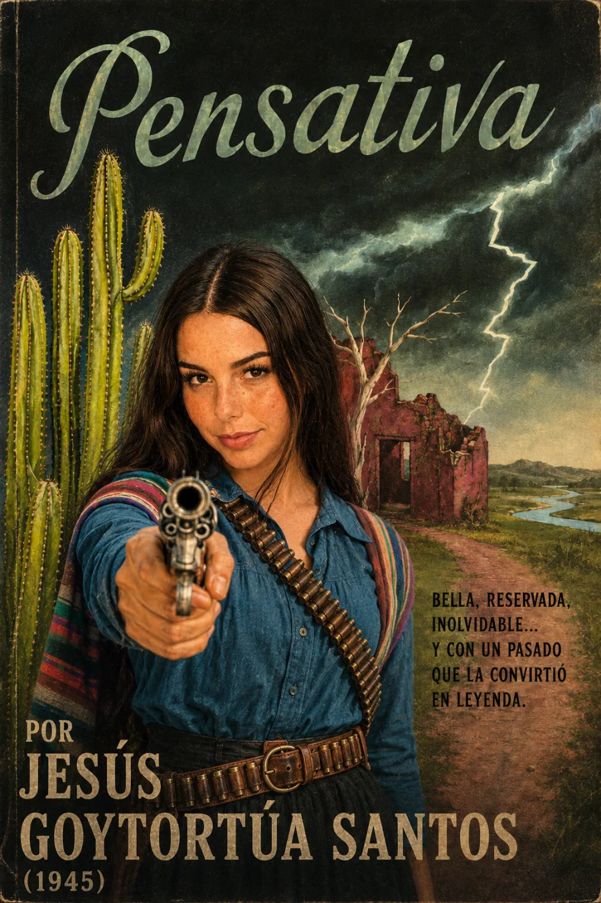
Pensativa
4.1/5
Resumen
Jesús Goytortúa Santos ambienta esta novela de 1945 en el México rural sacudido por la Guerra Cristera de la década de 1920, donde Pensativa, una joven bella y reservada con un pasado que la convirtió en leyenda, se ve arrastrada al conflicto entre la fe, la violencia y el deseo. La novela se hizo célebre poco después gracias a su adaptación al cine mexicano, que consagró tanto la historia como a su enigmática protagonista.
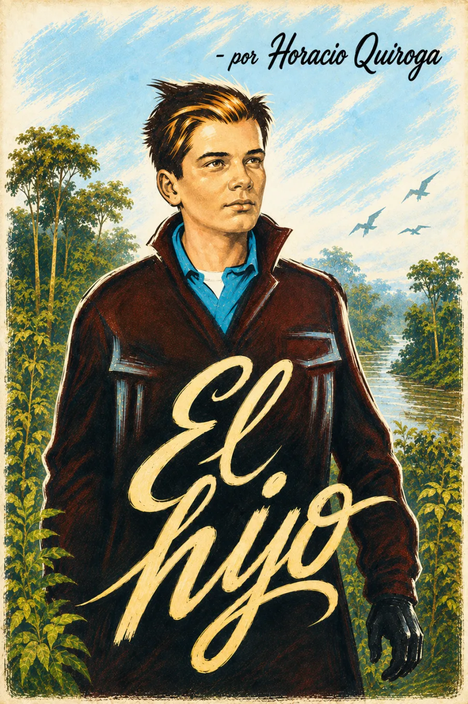
El hijo
4.8/5
Resumen
Horacio Quiroga narra en 1928 la mañana en que un padre despide a su hijo adolescente para que salga a cazar solo por primera vez en la selva misionera, y la angustia creciente que lo invade a medida que las horas pasan sin que el muchacho regrese. Con la tensión contenida y el fatalismo característicos del autor, el cuento construye uno de los finales más devastadores de la narrativa breve en español.
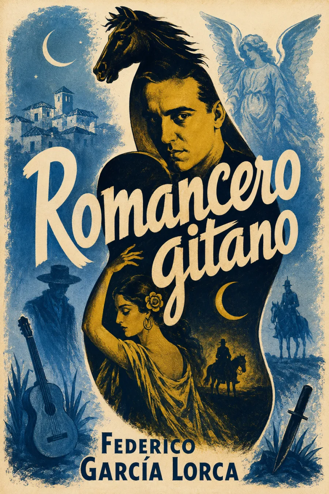
Romancero gitano
4.9/5
Resumen
Federico García Lorca publicó en 1928 esta colección de dieciocho romances que funden el folclore gitano andaluz con una mitología propia de lunas, caballos y navajas, hasta convertir Andalucía en un territorio a la vez real y legendario. Poemas como "Romance de la luna, luna" o "La casada infiel" consagraron a Lorca como la voz más popular y a la vez más innovadora de la Generación del 27, fundiendo tradición oral y vanguardia poética.
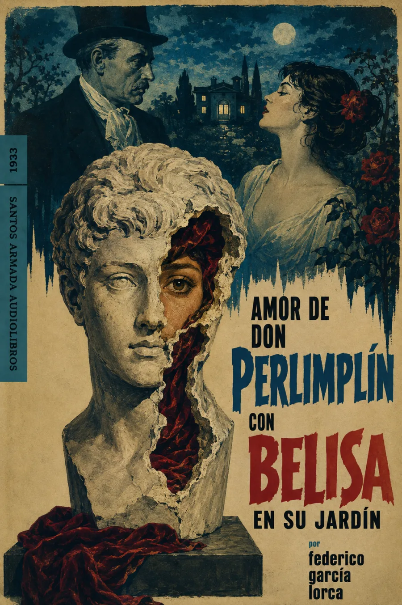
Amor de don Perlimplín con Belisa en su jardín
4.2/5
Resumen
Federico García Lorca subtitula esta pieza de 1933 "aleluya erótica" y narra las bodas, tardías y sin amor, entre el envejecido don Perlimplín y la joven y voluptuosa Belisa, orquestadas por la criada Marcolfa. Cuando Belisa lo engaña con cinco amantes bajo cinco antifaces distintos, Perlimplín urde una venganza que es también, a su manera, el único acto de amor verdadero que la obra le permite. Farsa breve, cruel y de una lírica extraña, entre el guiñol y el símbolo, que anticipa la obra trágica mayor de Lorca.
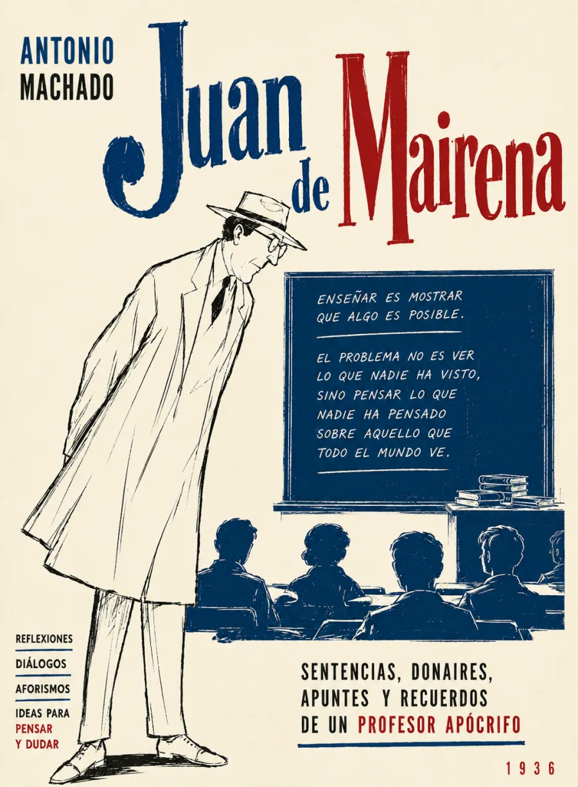
Juan de Mairena
4.6/5
Resumen
Antonio Machado publicó estas sentencias, diálogos y apuntes apócrifos entre 1934 y 1936, primero como artículos en el diario El Sol y luego reunidos en volumen. Juan de Mairena, el profesor de retórica y poética inventado por Machado como heterónimo, dialoga con sus alumnos sobre filosofía, lenguaje, política y el oficio de enseñar, siempre con la ironía socrática que caracteriza al autor. Escrito en la España que se asomaba a la Guerra Civil, es tanto un tratado de pensamiento como un testamento moral.
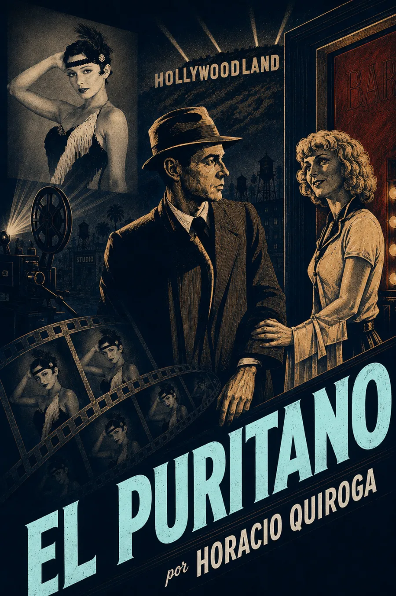
El puritano
3.6/5
Resumen
Horacio Quiroga ambienta este cuento de 1935 en el mundo del cine de Hollywood, donde un hombre de moral rígida se enfrenta al conflicto entre sus principios y la atracción que siente por una actriz del ambiente que juzgaba corrupto. Una de las incursiones de Quiroga en la crítica social a través del glamour y la hipocresía del star system de su época.
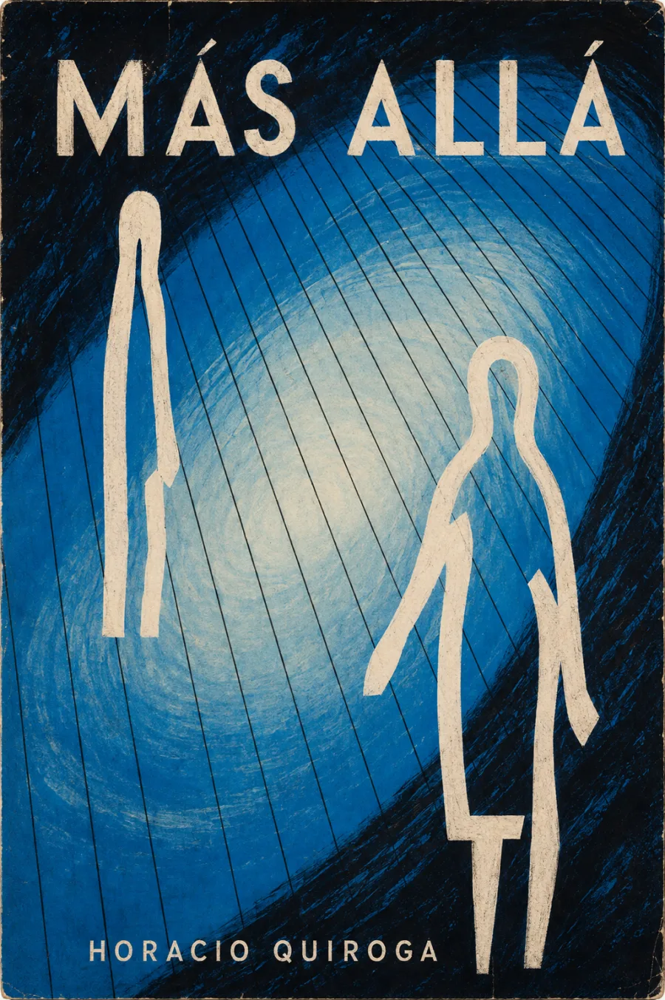
Más allá
4.0/5
Resumen
Cuento que da título a la última colección de Horacio Quiroga, publicada en 1935, poco antes de su muerte, en el que dos amantes separados por la muerte intentan reencontrarse en un más allá incierto y silencioso. Con un tono más introspectivo y menos brutal que sus relatos de juventud, cierra su obra con una meditación serena sobre el amor y la trascendencia.
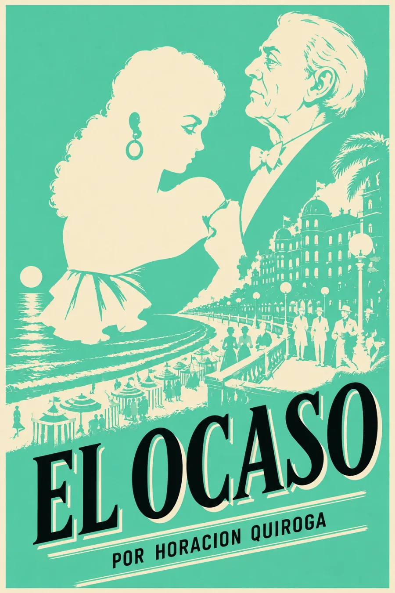
El ocaso
3.7/5
Resumen
Horacio Quiroga narra en 1935 el reencuentro tardío de una pareja que vivió un romance intenso en su juventud y ahora, ya mayores, se cruzan de nuevo en un balneario elegante, midiendo con melancolía todo lo que el tiempo cambió y todo lo que permaneció igual. Un relato de madurez que se aparta del horror y la selva para explorar el desgaste dulce y agridulce del amor con los años.
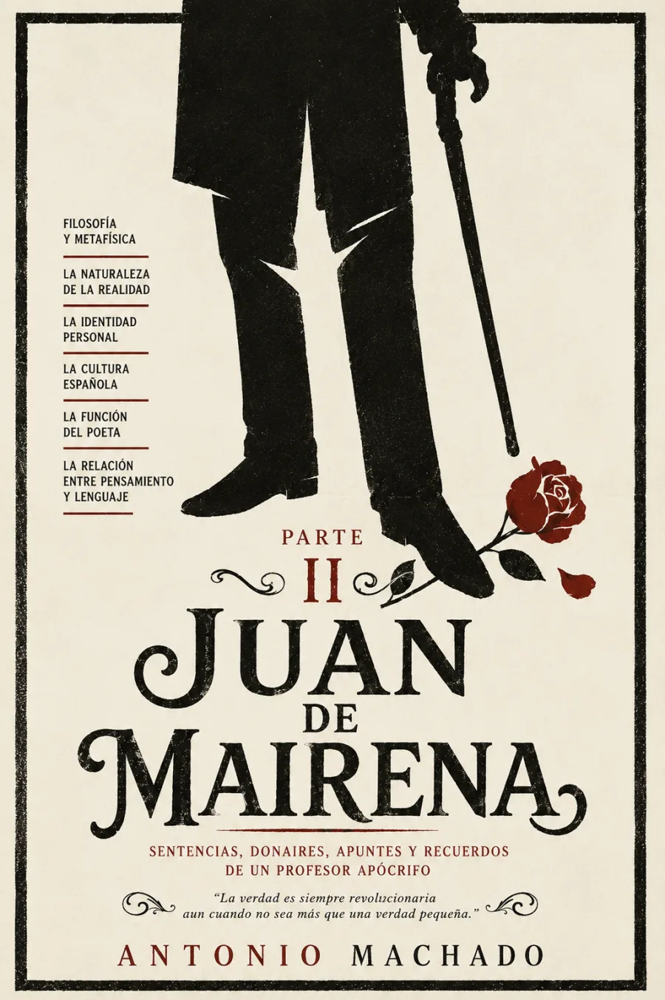
Juan de Mairena II
4.3/5
Resumen
Segunda entrega de las sentencias y apuntes del profesor apócrifo, que amplía el corpus de aforismos de Machado con nuevas reflexiones sobre metafísica, identidad personal, cultura española y la relación entre pensamiento y lenguaje. Mairena vuelve sobre la función del poeta y la naturaleza de la realidad con la misma voz irónica y dialogante del primer volumen, cerrando el proyecto de pensamiento apócrifo que Machado inició con Abel Martín. Confirma aquí su máxima más citada: "la verdad es siempre revolucionaria, aun cuando no sea más que una verdad pequeña."